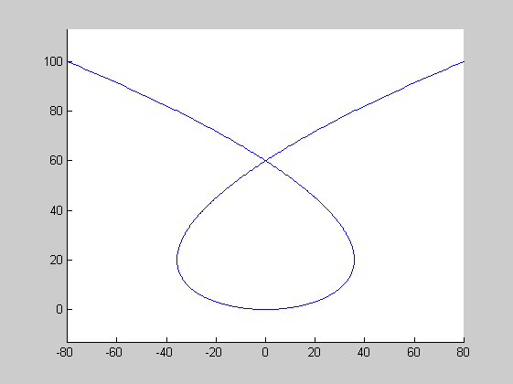
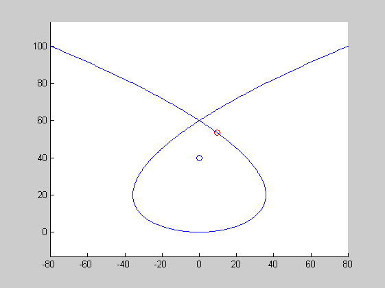

Contents
%DEMOPOLYNOMIALCURVEPROJECTION One-line description here, please. % output = demoPolynomialCurveProjection(input) % % Example % demoPolynomialCurveProjection % % See also % % % ------ % Author: David Legland % e-mail: david.legland@nantes.inra.fr % Created: 2007-12-21, using Matlab 7.4.0.287 (R2007a) % Copyright 2007 INRA - BIA PV Nantes - MIAJ Jouy-en-Josas. % Licensed under the terms of the LGPL, see the file "license.txt"
Initializations
% parametrization basis t = linspace(-10, 10, 1000)'; % coefficients of polynomial curve xc = [0 12 0 -1/5]; yc = [0 0 1]; % curve for display curve = polynomialCurvePoint(t, xc, yc); % draw the curve figure(1); clf; hold on; drawCurve(curve); axis equal;
Compute projection point
% the point to project point = [0 40]; % position of projection on the curve pos = polynomialCurveProjection(t, xc, yc, point); % coordinate of projection point proj = polynomialCurvePoint(pos, xc, yc); % draw the point and its projection drawPoint(point, 'bo'); drawPoint(proj, 'ro');